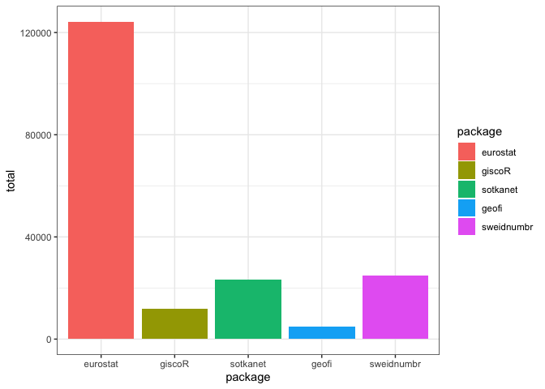

This package was originally intended for various algorithms for Finnish open goverment data using R. Now it hosts various functions that are helpful in package maintenance and authoring but do not fit in other, more specialized packages.
Installation
You can install the development version of sorvi from GitHub with:
# install.packages("devtools")
devtools::install_github("rOpenGov/sorvi")Using the package
Loading the package in R:
Get download statistics of various rOpenGov packages and visualize them:
df <- cran_downloads(pkgs = "eurostat", sum = "by_year", use.cache = FALSE)
df
#> # A tibble: 5 × 3
#> # Groups: year [5]
#> year package n
#> <dbl> <fct> <int>
#> 1 2016 eurostat 6419
#> 2 2017 eurostat 12482
#> 3 2018 eurostat 18932
#> 4 2019 eurostat 28454
#> 5 2020 eurostat 31298
plot <- cran_downloads(pkgs = c("eurostat", "giscoR", "sotkanet", "geofi", "sweidnumbr"), sum = "total", output = "plot", use.cache = FALSE)
plot
For more examples, check the tutorial page.
Contributing
-
Submit suggestions and bug reports (provide the output of
sessionInfo()andpackageVersion("sorvi")and preferably provide a reproducible example) - Send a pull request
- Star us on the Github page
- See our website for additional contact information
Acknowledgements
Kindly cite this work as follows: Leo Lahti, Juuso Parkkinen, Joona Lehtomäki, Jussi Paananen, Einari Happonen, Juuso Haapanen, Pyry Kantanen. sorvi - Finnish Open Government Data Toolkit. URL: http://ropengov.github.io/sorvi/
We are grateful to all contributors! This project is part of rOpenGov.